Maple Elementary School


A low single-storey school with a big red and orange maple and leaves on the lawn.
The game's pictures are now Blender renders. Each of the eight schools has its own building on the hub. The title screen and the pre-exam brief open on a rendered exam room. Five career event cards show a rendered object and a sixth shows a person in a doorway. Five icons that did not read were redrawn.
Every frame below is from the game: captured in Play mode (batchmode) at a phone's portrait size,
1080 × 2340, in the shipped dark theme and in the light proof theme. Branch img-blender, not yet merged.
The owner chose Blender renders over code-drawn vector art and the previous art after a side-by-side comparison.
Schools with their own building. Before this, four schools shared one clock tower and three shared one colonnade.
Renders are drawn larger than the size shown and scaled down, never up. The old hub art was enlarged 2× and the title 2.65×.
Each scene is rendered at dusk for the dark theme and in daytime for the light one. The theme picks by its background brightness.
The unreferenced PNGs in Resources/UI and the
two editor bakers that wrote them are removed.
The top of the hub for each school, dark theme on the left and light on the right. The building fills the picture above the text block. Its lower part sits under the scrim, behind the rank, name and stars.
A low single-storey school with a big red and orange maple and leaves on the lawn.
A school on the far bank, seen from above the water: lit windows reflected in the river, a footbridge and willows.
A college block with nearly every room lit, the east gate with lanterns, a bus shelter and the city behind.
Three storeys of brick with a lit clock tower, the school flag and a city skyline. It is the building players already know, now rendered.
A shop on a high street: a glowing fascia, a striped awning and lit classrooms upstairs. It reads as a business, not a school.
A gothic gatehouse with twin crenellated towers, pointed windows, a crest over the lit arch, railings and clipped yews.
A copper dome on a drum, over a portico of eight columns lit from inside, with wings and wide steps.
A monumental hall behind tall stone fins, lit from within, with a podium and a row of flags. It is the top of the career.
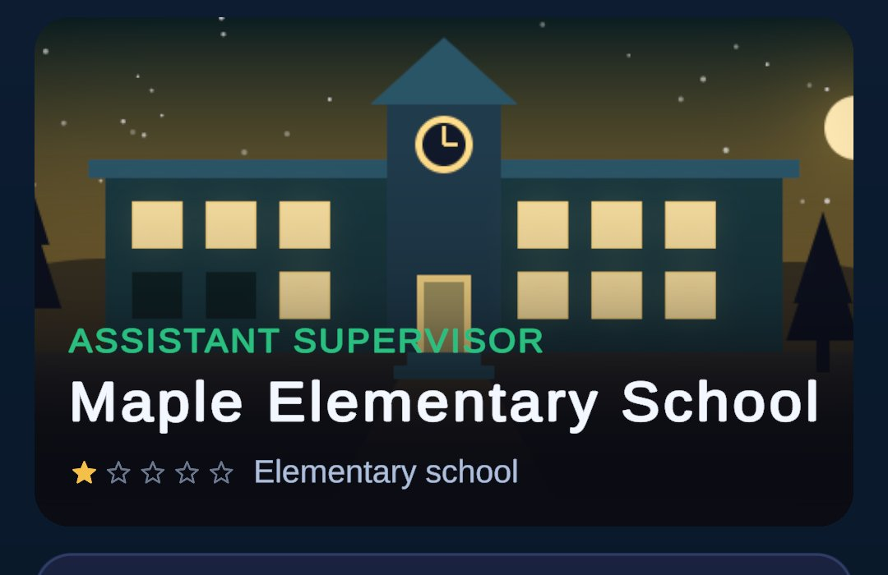
The title opens on an exam room set out for an exam: paper on every desk, the blackboard and clock, evening light through the windows, or daylight in the light theme. The brief and the after-exam summary show the same room as a wide banner.
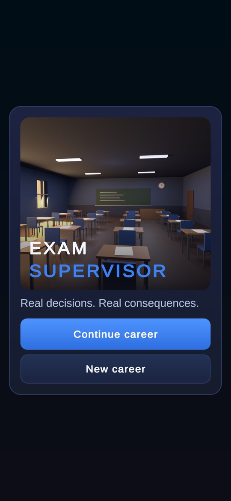
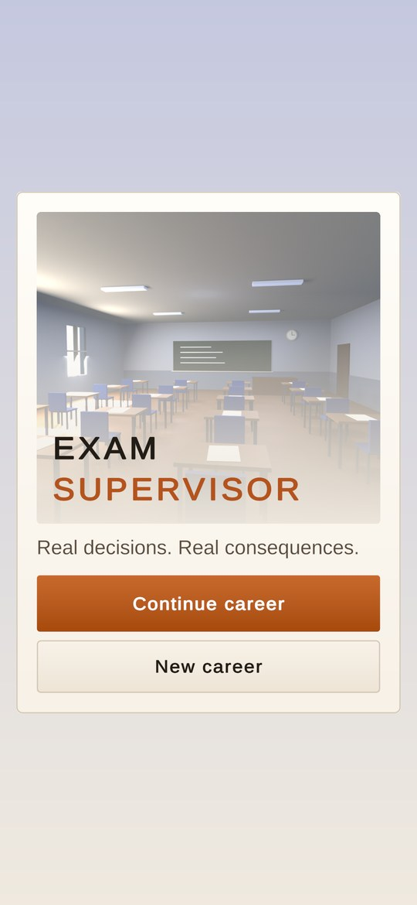
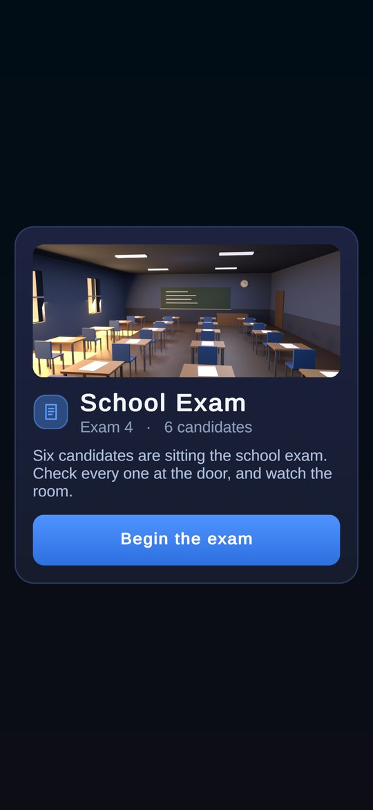
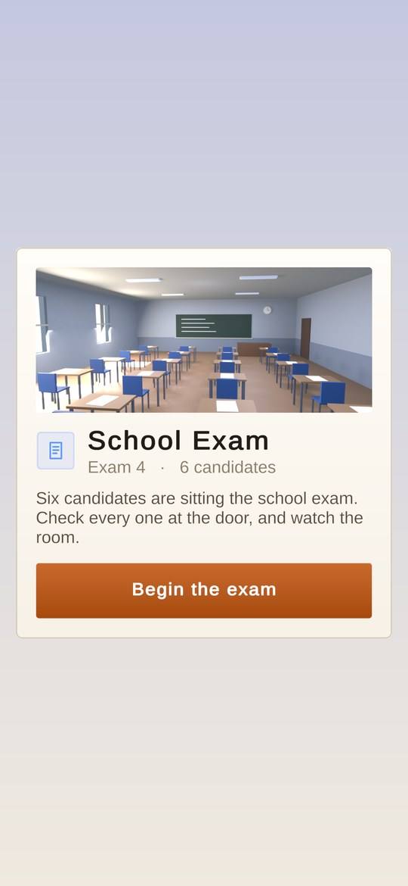
Each card opens on the object the event arrives as, rendered on a desk. One version serves both themes: the band is a picture inside the card, like a photograph, and the card around it follows the theme. The person is a figure standing in a lit doorway. That reads better than the faceless mannequin tried first, and better than the old flat silhouette. It is a stand-in until real portraits arrive (M106).
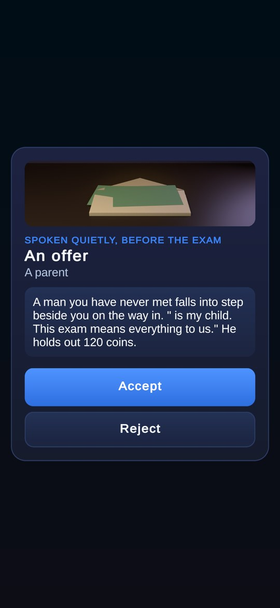
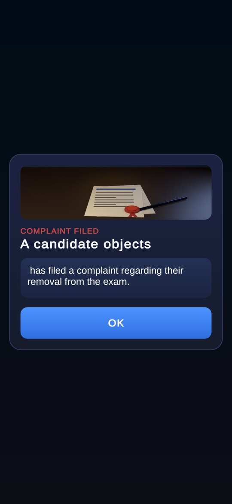
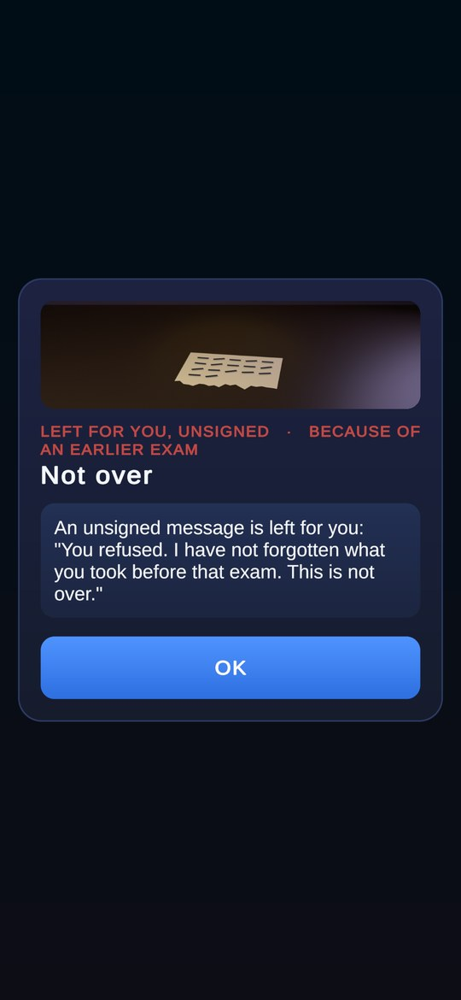
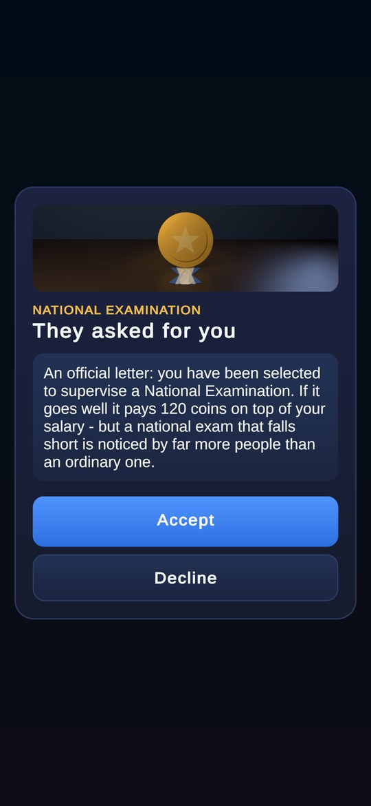
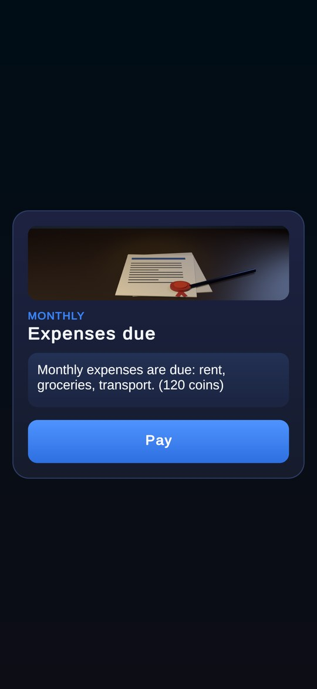
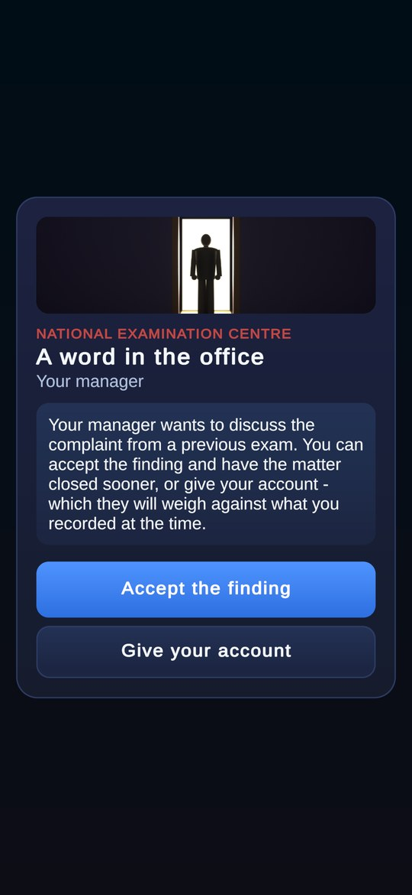
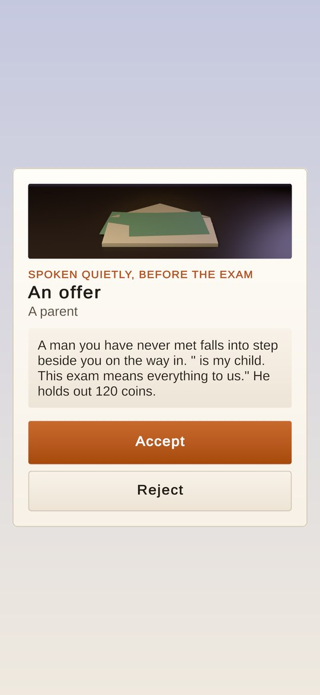
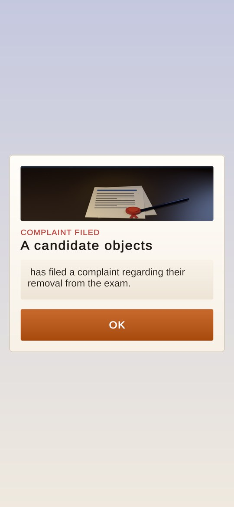
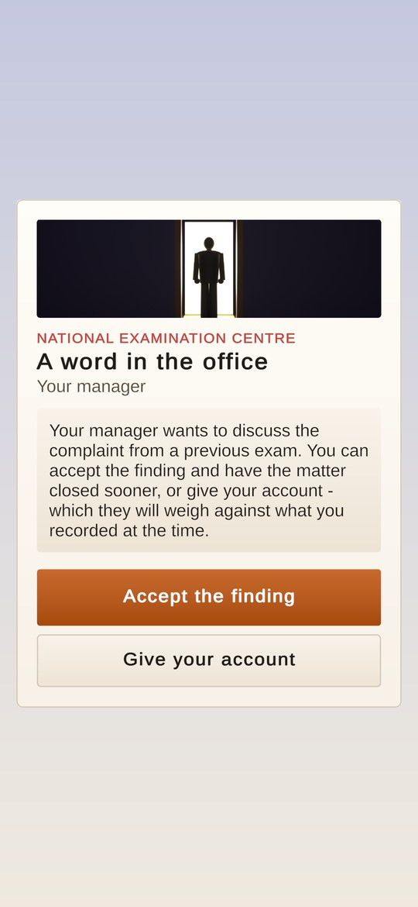
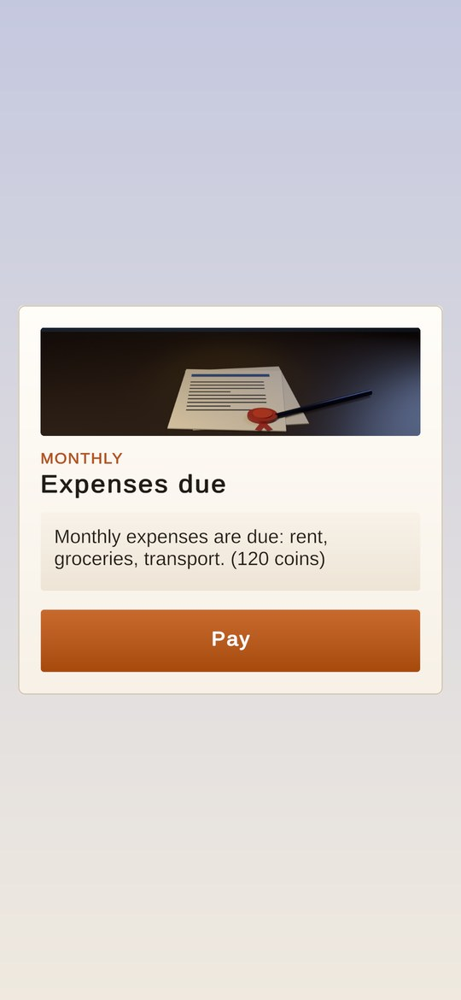
Icons are still drawn in code and tinted by the theme. Five that did not read at icon size were redrawn in the same rounded single-weight stroke:
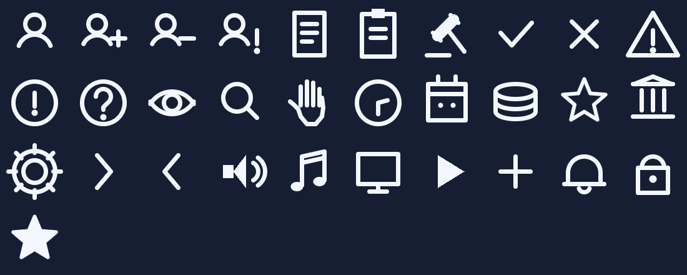
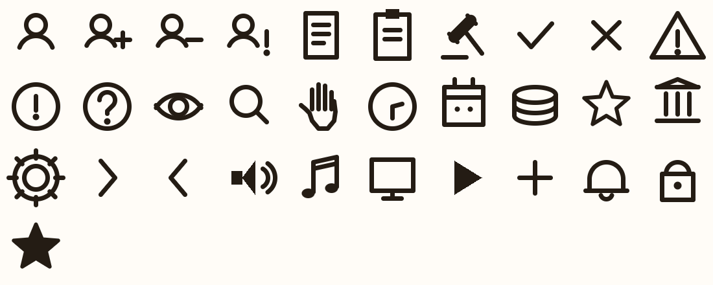
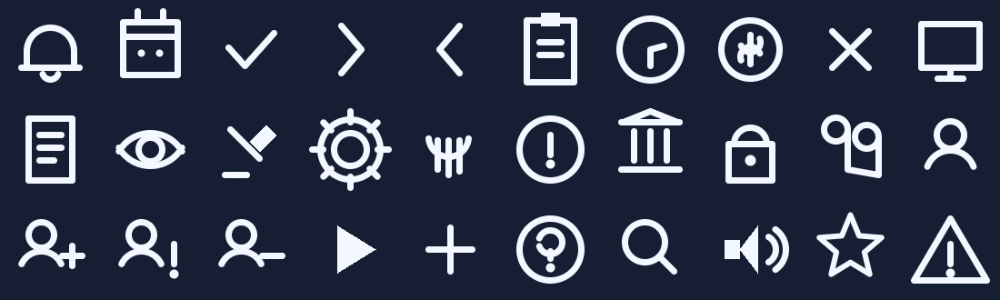
| Image | Where | Now | Rendered → shown |
|---|---|---|---|
| Hub hero, 8 schools | Home hub | Blender render, one per school kind, dark + light | 1248 × 775 → 996 × 618 |
| Title hero | Title screen | Blender render of the exam room, dark + light | 1248 × 1010 → 996 × 806 |
| Exam hall banner | Pre-exam brief, after-exam summary | Blender render, dark + light | 1120 × 483 → 890 × 384 |
| Event objects ×6 | Career event cards | Blender render, one version for both themes | 1120 × 318 → 890 × 253 |
| Shop items ×6 | Store tiles | Still drawn in code from the theme (Props, tile frame) | 330 × 220 → ~490 × 180 |
| Icons ×31 | Everywhere | Drawn in code, theme-tinted; five redrawn | 96 → 40–90 |
| App icon | Launcher | Unchanged (Assets/Art/Branding) | 1024² |
| Rounded surfaces, glows, shimmer | UI chrome | Unchanged, generated per radius | — |
9 dead PNGs in Resources/UI | Nowhere | Deleted, with EventSpriteBaker and UiSpriteBaker, and the one test that read ui_shadow | — |
The 26 renders are imported by BakedArtImporter as single sprites with no mipmaps,
no alpha and no CPU copy, compressed to ASTC 6×6 on Android. They load from Resources only when
a screen shows them.
All 26 renders compressed (ASTC 6×6, 3.56 bits per pixel). One hub picture is 0.41 MB in memory while it is on screen.
Source PNGs in the repository (RGB, optimised).
Development APK built from this branch. In the build report the 26 renders total 9.06 MB, and textures are 13.9 MB in all. The last main build (Oct 25, a different commit) was 103.0 MB, so this is not a clean before-and-after.
If size matters more than gradient smoothness, ASTC 8×8 brings the renders to about 5.1 MB. It is one line in the importer.
ArtSource/UI/imgq/blender/ and re-render with
render_all.py through the Blender bridge.